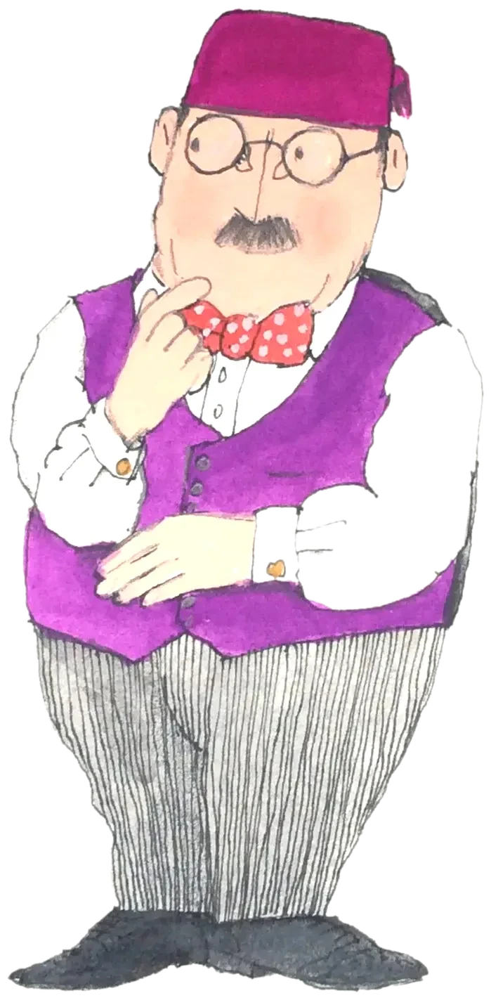

No bots beyond this door
Join the Whitelist
Mr Benimaru is the genesis release from Wabi Sabi Corp. Future collaborations with digital artists who align with our values are already in the works. Solve the slide puzzle below to submit your whitelist application for future drops. Be seeing you!
Goal: match the picture above.
Moves: 0
✓ Solved! Your application is unlocked.

Three steps to the whitelist
All on X — no forms. Complete each step, then tick it off.
-
1
Follow @MrBenimarusays on X.
Follow on X → -
2
Like the pinned post.
Like the post → -
3
Reply to the pinned post with your wallet address.
Reply on X →
🎩
You're in the running!
We review the replies on the pinned post by hand. Keep an eye on @MrBenimarusays.